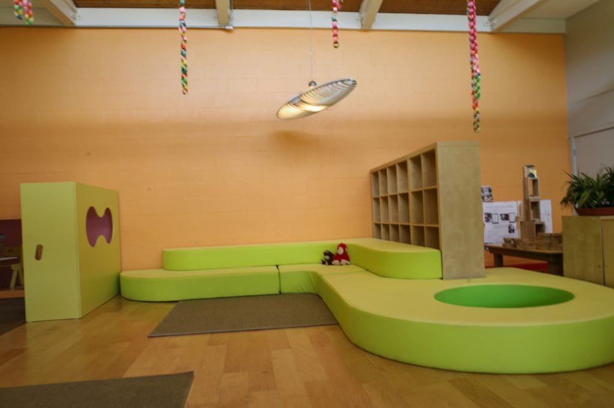
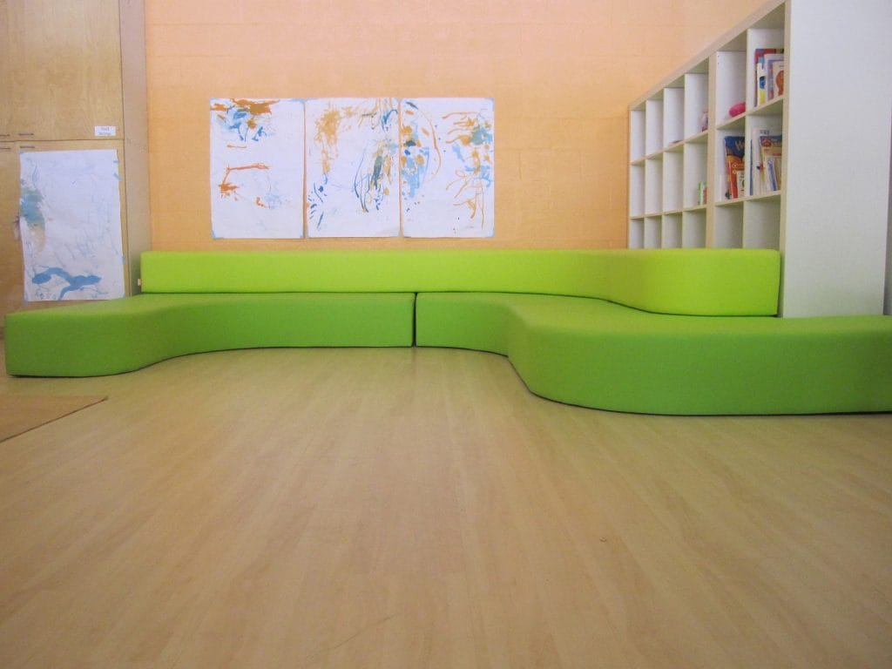
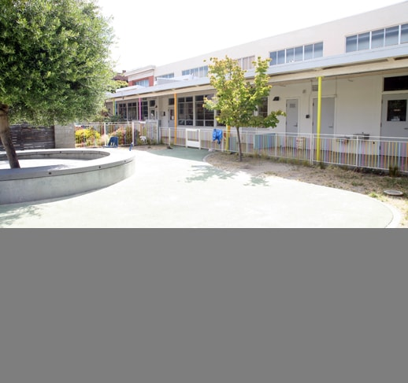

PRESIDIO KNOLLS SCHOOL




General Contractor
Mark Davies Construction
PRESIDIO KNOLLS SCHOOL II, 2012
SAN FRANCISCO, CA
After completing Presidio Knolls School’s original building in the Marina, Bach Architecture collaborated with Reggio Emilia specialists ZPZ Partners for the design of a Mandarin-immersion preschool in the Soma neighborhood. Set within an existing preschool facility, a new colorful lobby welcomes children and parents to the facility. The design fosters interaction between the children and the soft built-in furniture, providing tactile experiences and an awareness of light. A custom Corian sink encourages water play.
© 2023 BACH ARCHITECTURE. All rights reserved. | 3752 20th Street, San Francisco, CA 94110 | (415) 425-8582 | info@bach-architecture.com